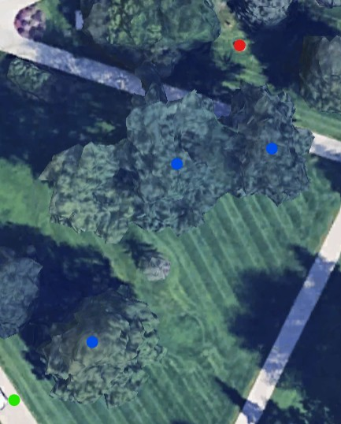

Stats
Par: 12
Distance: 173 ft
Hole Description
Starting from on the path next to the lamppost from the last hole, the there is a mandatory right of the large tree ahead, and then a mandatory between the two trees to the left in front of the path, then the target is the rock that is broken up.
Map key: green dot starting box, red dot target, blue dot mandatory.